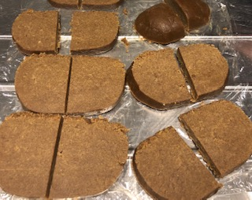
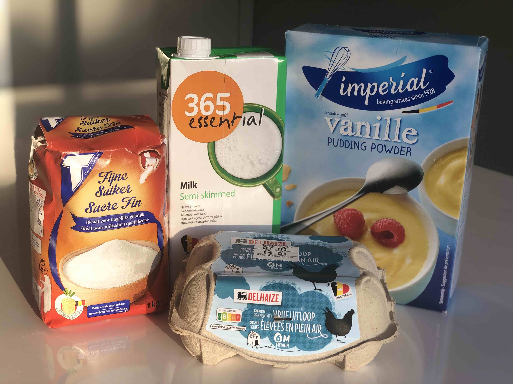
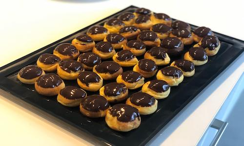
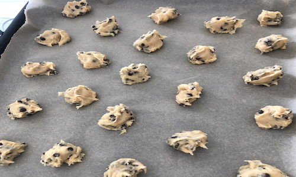
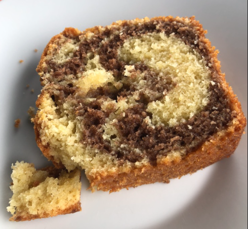
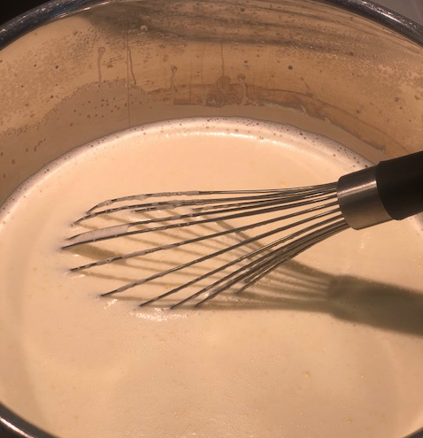
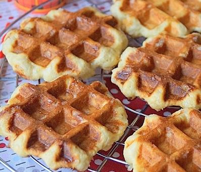
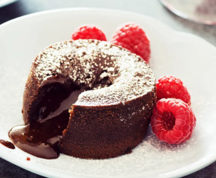

Mon carnet de recettes
Spéculoos
Ingrédients:
- 1 kg farine
- 600 g cassonade brune
- 400 g de margarine molles
- 2 cuillères à café de "4 épices"
- 1 cuilèrre à café de canelle
- 1 cuirère à café de bicarbonate de soude
- 1 pincée de sel
Préparation:
- Bien mélanger le tout
- Faire un boudin et l'emballer dans du film alimentaire et mettre au frigo pendant une nuit
- Préchauffer le four à 220°C
- Couper le boudin en tranches de +- 1.5 cm d'épaisseur
- Mettre éventuellement une amande effilée au centre
- Cuire 12 minutes à 180° C
- Sortir du four,
- Bon appétit!

La crème patissière
Ingrédients:
- 1 litre de lait demi écrémé
- 90 g pudding
- 3 oeufs entiers
- 200 g sucre
- 1 pincée de sel
Préparation:
- Delayer le pudding, les oeufs, le sucre dans 1/3 du lait froid dans un grand bol jusqu'à ce qu'il n'y ait plus de grumeaux
- Ajouter le mélange délayé dans une casserole avec le reste du lait et porter à ébullition
- Retirer la casserole du feu lorsque le pudding est bien épais tout en continuant à mélanger
- Laisser refroidir et reposer une nuit au frigo
- Sortir du frigo et battre doucement la crème pour la rendre onctueuse et homogène
- La crème patissière est maintenant prète à remplir vos patisseries avec une poche à douille

Les petits choux
Ingrédients:
- 125 g de lait demi écrémé
- 125 g d'eau
- 200 g de farine
- 100 g de margarine
- 5 oeufs entiers
- 3 pincées de sel
Préparation:
- Mettre dans une casserole l'eau, le lait, la margarine et le sel
- Au premier bouillon, jeter la farine et tourner vivement avec la cuillère en bois jusqu'à ce que la pâte forme une boule et se détache de la casserole
- Hors du feu, incorporer les oeufs, un à un
- Cuire à 200°C charleur tournante

Pâte à crêpes non sucrée (4 personnes)
Ingrédients:
- 150 g de farine fermentante
- 4 oeufs
- 4 dl de lait
- 4 cuillères à soupe de beurre
- 1 pincées de sel
Préparation:
- Tiédir le lait et le beurre
- Battre les oeufs entiers en omelette, ajouter la farine et la pincée de sel
- Verser le liquide sur ce mélange et fouetter vivement pour obtenir une pâte bien lisse
- Laisser reposer de préférence 30 minutes avant l'emploi
Cookies au Chocolat
Ingrédients:
- 150 g de sucre
- 150 g de sucre brun
- 200 g de beurre fondu
- 2 oeufs
- 300 g de farine
- 1 cuillère à café de levure sèche
- 1 paquet de sucre vanilliné
- 300 g de pépites de chocolat
Préparation:
- Préchauffer le four le four à 180°
- Dans un plat mélanger les sucres et le beurre fondu
- Ajouter les oeufs et battre le mélange
- Incorporer la farine et la levure
- Mélanger bien la préparation en ajoutant le chocolat
- Former des petites boules sur la plaque du four couverte d'un papier de cuisson
- Cuire pendant 10-12 minutes (ne pas cuire de trop, ils vont durcir en refroidissant)
- Laisser refroidir avant la dégustation

Tiramissu (8 personnes)
Ingrédients:
- 500 g de mascarpone
- 100 g de sucre
- 4 oeufs
- (fruits rouges ou spéculoos)
Préparation:
- Battre au fouet électrique les jaunes d'oeufs avec le sucre jusqu'à ce qu'ils blanchissent
- Ajouter le Mascarpone et bien mélanger
- Battre les blancs d'oeufs en neige ferme et les ajouter délicatement à la préparation
- Présenter dans un plat en pirex avec des couches de spéculoos ou des fruits rouges)
- Mettre au moins 3h au réfrigérateur et 30 minutes au surgélateur avant de servir.
Pancakes (5 personnes)
Ingrédients:
- 3 oeufs
- 3 cuillères à soupe de sucre
- 3 cuillères à soupe d'huile ou de beurre fondu
- 3 cuillères à café de levure
- 375 g de farine
- 500 ml de lait
Préparation:
- Battre l'oeuf et le sucre dans un saladier
- Ajouter le beurre fondu ou l'huile
- Mélanger la farine et la levure et mélanger la moitié avec la préparation
- Délayer progressivement avec le lait tout en rajoutant l'autre moitié de farine petit à petit pour éviter les grumeaux
- Aucun temps de repos n'est nécessaire
- Cuire dans une poêle à feu moyen
- A l'aide d'une petit e louche déposer des ronds dans la poêle
- Lorsque les bulles apparaissent et éclatent, retourner les pancakes (attention, une fois retourné cela va encore plus vite)
Pate à Pizza (6 personnes)
Ingrédients:
- 525 gr de farine
- 3 cuillères à café de sel
- 1.5 sachet de levure
- 5 cuillères à soupes d'huile d'olive
- 40 cl d'eau tiède
Préparation:
- Mettre la farine dans un grand saladier puis ajouter sel, levure et huile
- Verser petit à petit l'eau tiède tout en mélangeant avec une cuillière en bois
- Remuer longuement jusuq'à l'obtention d'une pâte qui se détache
- Laisser reposer 1h avec un torchon dans un endroit chaud
- Travailler la pâte comme une pâte à pain en faisant ressortir l'air
- Façonner votre pâte aux dimensions de la plaque du four
- Agrémenter de vos envies ou de vos restes dans le frigo
Mousse au chocolat (8 personnes)
Ingrédients:
- 200 g de cholocal noir
- 4 oeufs
- 2 dl de crème fraîche
Préparation:
- Séparer les blancs et les jaunes
- Fondre le chocolat au bain marie avec très peu de lait
- Hors du feu, ajouter un à un les jaunes d'oeufs
- Battre les blancs en neige ferme
- Battre la crème fraîche en Chantilly
- Mélanger légèrement la crème fraîche et les blancs battus
- Les incorporer à la préparation au chocolat tiédie
- Laisser prendre au moins 6 heures au réfrigérateur
Cake marbré au chocolat (8 personnes)
Ingrédients:
- 200 g beurre
- 200 g de sucre
- 1 paquet de sucre vanillé
- 300 g de farine
- 4 oeufs
- 1 sachet de levure chimique (10 gr)
- 1 pincée de sel
- 25 g de cacao
- 3 cuillères à soupe de crème fraîche
- 3 cuillères à soupe de lait
Préparation:
- Séparer les jaunes et les blancs
- Battre les jaunes, le sucre et le sucre vanillé avec un batteur électrique jusqu'à ce qu'ils blanchissent et forment ruban
- Faire fondre le beurre et l'ajouter au mélange oeufs-sucre
- Ajouter la crème et le lait pour alleger la pâte
- Battre la crème fraîche en Chantilly
- Battre les blancs en neige ferme avec une pincée de sel à la fin
- Ajouter alternativement la farine et les blancs en eige au mélange en travaillant souplement
- Mettre 1/3 de la pâte dans un autre récipient et la mélanger avec le cacao
- Dans moule, étaler des couches de la pâte blanche et brune successivement en commencant et terminant par une couche blanche
- Remplir maximum aux 2/3 le moule
- Préchauffer le four à 170 degrés
- Faire cuire pendant 55 à 60 minutes en contrôlant la cuisson avec une aiguille à tricoter piquée au milieu du gâteau

Glace vanille de Bonne Maman (pour deux litres de glaces)
Ingrédients:
- 1 litre de lait demi écrémé
- 300 g de sucre
- 2 sachets de sucre vanillé
- 10 jaunes oeufs
- 40 cl de crème fraiche
- 1 pincée de sel
- 5 batons de chocolat pour la stracciatella.
Préparation:
- Faire un ruban avec les jaunes et les sucres (battre au fouet électrique jusqu’à ce que ça blanchisse)
- Faire bouillir le lait avec une pincée de sel
- Verser le lait bouillant sur le ruban tout en mélangeant pour éviter que les jaunes de cuisent.
- Reverser le mélange dans la casserole.
- Chauffer en battant jusqu’au premier bouillon et que le mélange épaississe (le mélange devient mousseux). C’est ce qui donnera l’onctuosité à votre glace.
- Stopper la cuisson en plongeant votre casserole dans un évier d’eau froide.
- Laisser refroidir la glace et puis la mettre au frigo jusqu’au refroidissement complet.
- Mettre aussi la crème fraîche au frigo.
- Lorsque le mélange et la crème sont bien froids, ajouter les deux berlingots de crème fraîche avant du turbiner.
- Turbiner la glace pendnat environ 30 minutes
- Pour la stracciatella, faire fondre son chocolat tout doucement pour qu’il soit fondu, mais à température minimum et l’ajouter à la fin quand la glace est prise.

Gaufres de Liège
Ingrédients:
- 50 g de leveure fraiche
- 2 dl d'eau froide
- 300 g de beurre
- 400 g de farine
- 25 g de sucre impalpable
- 250 g de sucre perlé
- 2 oeufs entiers
Préparation:
- Délayer les 50 gr de levure fraiche dans 2 dl d'eau froide
- Ramolir le beurre en crème
- Mélanger tous les ingrédients et laisser reposer 15 minutes
- Cuire dans un gaufrier

Mi-Cuit au chocolat (4 personnes)
Ingrédients:
- 40 g de farine
- 3 oeufs entiers
- 100 g de chocolat noir
- 90 g de beurre
- 120 g de sucre
Préparation:
- Préchauffer le four à 200°C
- Fondre le chocolat et le beurre
- Blanchir les oeufs entiers et le sucre au batteur
- Mélanger le chocolat, le beurre et les oeufs
- Incorporer la farine
- Beurrer des ramequins ou des moules en aluminium jetables
- Verser la préparation dans les moules
- Enfourner pour 15 mn
- Le dessus de chaque mi-cuit doit former une croûte et l'intérieur doit être coulant
- Servir dès la sortie du four démoulé ou pas

Recette Béarnaise Maison (1 personnes)
Ingrédients:
- un jaune d'œuf
- une cuillère à soupe d'huile arachide
- une cuillère à soupe d'eau
- 1/2 cuillère à soupe de vinaigre à l'estragon
Préparation:
- Tout cuire dans un bain-marie, en fouettant
- Saler à la fin quand c'est sorti, à la fin
Boulettes Liégoises (6 personnnes)
Ingrédients:
- 1Kg de haché porc-boeuf
- 4 tranches de pain de mie trempées dans du lait
- 5 oignons dont un finement haché
- percil
- 2 oeufs
- muscade, 4 clous de girofle, 2 feuilles de laurier, quelques baies de genévrier
- 1 litre de bouillon de viande
- 4 cuillières à soupe de cassonade
- 2 cuillières à soupe de sirop de Liège
- chapelure
- 1 trait de vinaigre de vin rouge
Préparation:
- Boulet (haché, pain, oignon haché, persil, oeufs, chapelure), 40' à 120 degré au four dans un plat bien beuré
- Dans le jus de cuisson, faire revenir 4 oignons emincés
- Soupoudrer d'une pincée de thym, laisser blondir, ajouterensuite 4 cuillière à soupe de cassonade brune pour former un caramel.
- Déglacer ensuite avec un filet de vinaigre de vin rouge.
- Mouiller avec un litre de bouillon de viande, porter à ébullition et mettre le sirop de Liège, les clous de girofles et baies de genévrier. Laisser cuire 35'
- Fin de cuisson, ajouter raisons de Corinthe et lié la souce avec un beurre manié (beurre+farine)